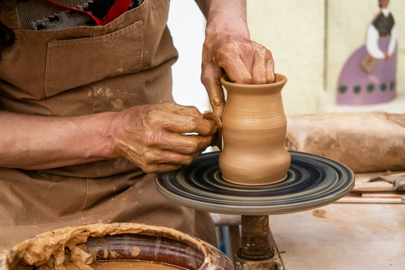
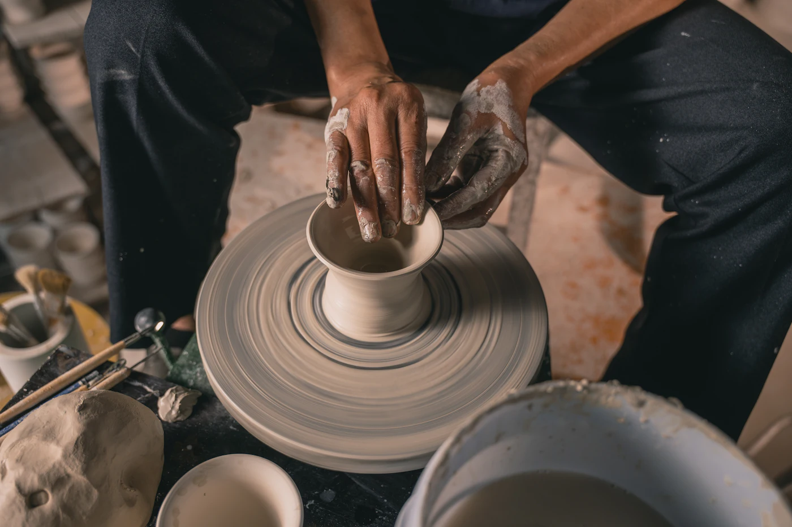
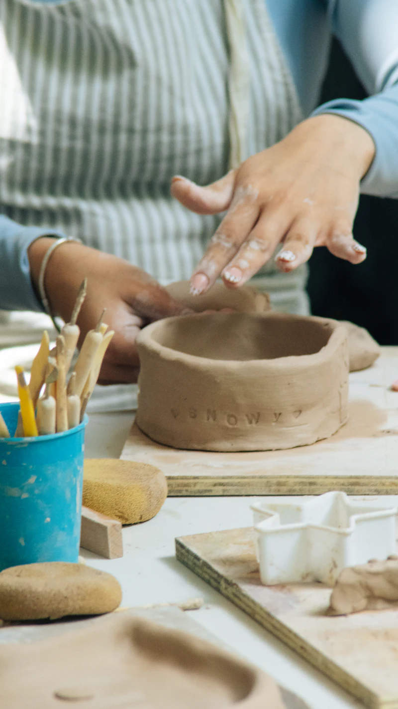
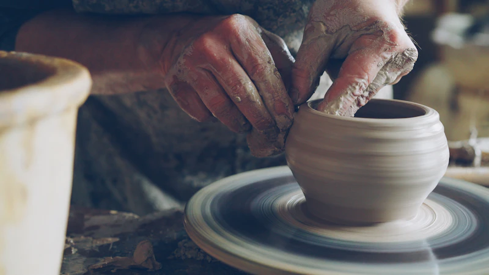

LE GRAND CLASSIQUEINITIATION · 2H30
Tournage en douceur
Centrez la terre, trouvez le geste. Repartez avec une pièce façonnée par vos soins.
58 € / personne↗ Tout niveau
STUDIO DE CÉRAMIQUE · BORDEAUX
Les mains dans l’argile, l’esprit ailleurs. Choisissez votre atelier et réservez votre place en quelques instants.
Choisir un atelier ↓
LES MAINS DANS L’ARGILE
Un tablier, quelques outils, et le plaisir de faire quelque chose de ses mains.

LE GRAND CLASSIQUECentrez la terre, trouvez le geste. Repartez avec une pièce façonnée par vos soins.

LES MAINS LIBRESPas de tour, pas de règle. Une forme, une texture, votre imagination pour guide.

À DEUX, OU À PLUSUn moment complice pour fabriquer ensemble et repartir avec un souvenir unique.
ON GARDE UNE PLACE POUR VOUS
Choisissez une date, un atelier et laissez-nous le reste. La réservation est sans paiement en ligne dans cette démo.
Vous choisissezUn atelier, une date, un créneau.
On vous confirmeUn e-mail de confirmation, sous 24 h.
Vous créezTout est prêt à l’atelier. À vous de jouer.
LA TERRE PREND SON TEMPS.
VOUS AUSSI, VOUS POUVEZ.